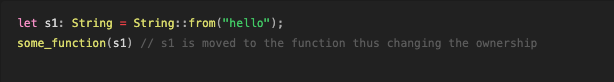

Memory safety
Rust programming language solves a fundamental problem of memory safety that is prevalent many programming languages. The problem of memory safety is and not limited to the following memory bugs.
- Double free
- Use after free
- Memory leaks
These memory bugs are the most common types of memory bugs especially in system languages like C, C++ where memory safety has to be guaranteed by the programmers themselves and these bugs can slip through the cracks when a system grows really large.
Programming languages like GO, JAVA tackle these problems by using a garbage collector, another program that run alongside the user program that book keeps all the resources used by the user program, and properly allocate and deallocate the resources as per the need of the program.
This has a huge cost penalty because the garbage collector has to run along side the program to prevent any kind of above mentioned bugs.
Rust tackles this fundamental problem by its ownership model. Instead of paying a huge runtime cost, Rust instead chooses to pay a compilation cost to check if these bugs appear in the code base and the resulting binary is light weight, memory safe and as fast as the system languages like C and C++ without these memory safety guarantees.
We will delve a bit into how the ownership model actually makes this possible.
Background on Rust’s Ownership model
To understand why Rust’s ownership model even exists, lets first
understand the concept of memory layout and how the program stores all
its resources on the stack and heap.
Allocation
Stack is the place in memory that the program use, where all the
resources with a fixed size is kept. For example an unsigned int of size
64 bits u64 always has the same size and is kept on the
stack.
But not all the resources the program uses can be of fixed size. The program might require resources that does not have a fixed size at compile time. Such data is kept in heap.
Lets now look at how the resources is represented in the stack and heap.
let x: i64 = -5
let y: &str = "hello"; // this is a string literal, its size is fixed at compile time
let z: u64 = 5;
In the above diagram we can see how the values are stored on the stack. The most recent value stays on the top of the stack and also gets removed first.
Now lets look at a more complex type whose size is unknown at compile time.
let string_hello = String::from("hello"); We have used the String type whose size is unknown at compile time.
Because its size is unknown at compile time, the program has to allocate
memory for string_hello variable by asking the allocator to
do so. The allocator now allocates a memory chunk of a certain capacity
for the string_hello variable.

A String type is represented in the following way in the memory.
In the stack, the information of string like its length, its capacity that is initially given by the allocator and the heap pointer is placed. All these fields have a fixed size which makes up an entry of String on the stack. The actual content of the string is placed in the heap and its pointer is stored in the stack. So whenever we access the value of a string, the lookup happens in the stack, which yields the heap pointer and then via the pointer, the value is accessed from the heap.
Deallocation
Now, when the variable goes out of scope, the memory that the variable holds has to be deallocated and given back to the OS. For the variables in stack, while deallocating, the stack members are simply popped and just the popping action deallocates the memory. But in case of String, simply popping the elements will surely deallocate the stack entry of the String but we also know String type holds memory in the heap which needs to be explicitly deallocated. So while the variable goes out of scope, the heap memory that the variable held needs to be dropped. Otherwise the heap memory is leaked and it is not okay to do so.
Drop Trait
The deallocation of heap entry happens by calling drop()
method on the type. This drops the underlying heap allocation.
Copy vs Clone
Now lets imagine a scenario.
// first case
let x :i32 = 5;
let y :i32 = x;
// second case
let s1: String = String::from("hello");
let s2: String = s1;Here in the first case, when x is initialized, its value is allocated in the stack. When y is allocated, the stack entry of x is copied for y i.e. y receives the copy of x which is also 5.
The act of copying the contents of the stack is dictated by the
Copy trait.
Now lets imagine the second scenario just like we did for the first scenario.
The stack entry of s1 consists of
(len, cap, pointer to the heap). If we now copy this for
s2, s2 will now contain the copy of these which means it will also have
(len, cap, pointer to the heap)

Now during the deallocation when the variable s1 and s2 go out of
scope, the drop method for both of these is called resulting in dropping
the underlying heap allocation. Since they point to the same heap
memory, that creates a situation of double free which is not okay.
So what happens in the above situation?
When you initialize s2 with s1, the value is moved from s1 to
s2 and
s1 no longer becomes valid. This is called moved. The ownership of the
underlying heap allocation is moved from s1 to s2. Now since s2 is the
new owner of the underlying heap, when the deallocation happens, only
s2’s drop will drop the underlying heap allocation thus preventing the
double free.

But there is situation in which we would like to duplicate the the
variables and even the ones allocated in heap. This is also called a
deep copy. Since deep copy involves also copying the underlying heap
memory, this is expensive task and by users have to explicitly instruct
the program to create a deep copy by invoking the clone()
method of the Clone trait. This creates two entries s1 and s2 and their
respective heap pointers. Now when the variable goes out of scope or
drop is called, they drop their respective heap allocations.
let s1: String = String::from("hello");
let s2: String = s1.clone();
Function Calls and Ownership
The mechanism of function calls is really similar to copying the stack entries of the items that we are trying to call the function with. The stack elements are first pushed onto the stack. From the previous sections, we have come to agreement that simply copying the stack entries for the items with heap allocation, causes the change of ownership of the allocated heap objects to the receiver of that assignment. During function call as well, similar thing happens.
References and Borrowing
Now this feature can be a pain. There are situations in which you still prefer to keep s1 after
calling the function with it and you explicitly do not want
to make an extra copy of s1 by invoking clone() while calling the function. Which is
to say you do not want s1 to move but still want some other receiver
to receive the contents of s1 without the receiver actually owning it. This is called borrowing.
We can pass s1 to some receiver without moving its ownership by passing the reference to
s1 which is represented as &s1. The receiver only has the reference
to it. So even after the receiver is out of scope, it cannot drop s1 because the receiver only
takes the reference and not the ownership of s1.
Mutable and Immutable borrow
There exists a situation in which you want the receiving function or any such things to mutate the contents of
s1. By default all the variables and resource in rust are immutable. Only when we specify
mutability to a variable, it becomes mutable. For that we use mut keyword. So a function that wishes to mutate
s1 needs to have a mutable reference to s1.
fn main() {
let mut s1: String = String::from("hello"); // notice we have to specify the mutability
some_function(&s1);
some_function_mutates(&mut s1);
println!("{s1}") // "hello world"
}
fn some_function(s: &String) { // immutable reference
_ = s;
}
fn some_function_mutates(s: &mut String) { // mutable reference
s.push_str(" world");
}